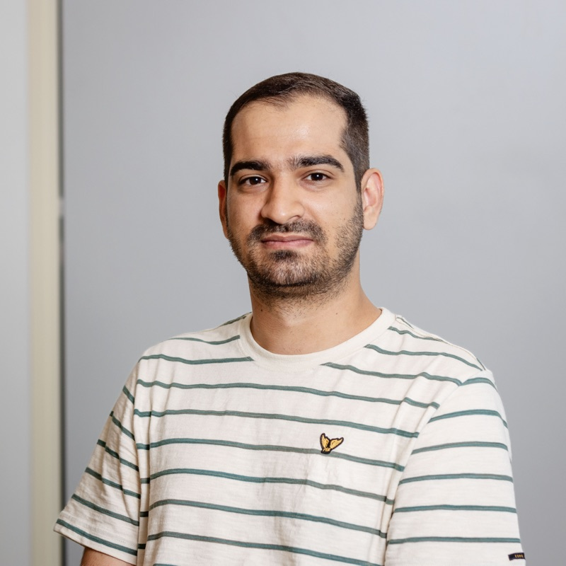

Heydar Soudani
I am a final-year PhD candidate at Radboud University, where I focus on developing trustworthy AI systems. My research centers on retrieval-augmented generation (RAG), deep research agents, and uncertainty quantification, with the goal of building reliable AI systems capable of solving complex information-seeking and reasoning tasks.
My work has been published in leading academic venues, including ACL, EMNLP, SIGIR, ACM Computing Surveys, COLING, SIGIR-AP, and ICTIR.
Alongside my academic research, I actively collaborate with industry as an Applied AI and Data Science Researcher. Most recently, I completed a research internship at Thomson Reuters, where I developed agentic search solutions for the legal domain. Prior to that, I worked with KPN to integrate uncertainty quantification methods into their RAG systems, improving the reliability and trustworthiness of AI-generated responses.
Ph.D. Computer Science
Data Augmentation for Conversational AI
Supervisor: Faegheh Hasibi
M.Sc. Computer Engineering
Predicting Novelty Concepts in Data Stream
Supervisor: Hamid Beigy
B.Sc. Electrical Engineering
Providing new cloud services on the Kubernetes platform
Supervisor: Hassan Taheri
B.Sc. Computer Engineering
Minor degree, taken alongside the Electrical Engineering major.
PhD Candidate
Trustworthy Generative Information Access. Researching deep research agents and uncertainty quantification.
Published at ACL, SIGIR, ACM Computing Surveys, SIGIR-AP, and ICTIR.
Supervisors: Faegheh Hasibi, Arjen de Vries
Data Scientist Intern
Researched and developed agentic search systems for the legal domain. Published at EMNLP.
Supervisors: Navid Rekabsaz, Elizabeth Lingg
Data Scientist Intern
Applied uncertainty quantification methods to internal RAG systems to make their responses more reliable.
Supervisor: Gianluigi Bardelloni
Web Developer
Developed web applications for:
- Smart metering system (AtroMeter)
- Fleet management system (Navgoon)
- Home automation (Smart Home)
- Building management system (BMS)
Research Assistant
Collaborated on AVR and Raspberry Pi programming, computer vision for localization, and PCB design with Altium Designer.
Supervisor: Farzaneh Abdollahi